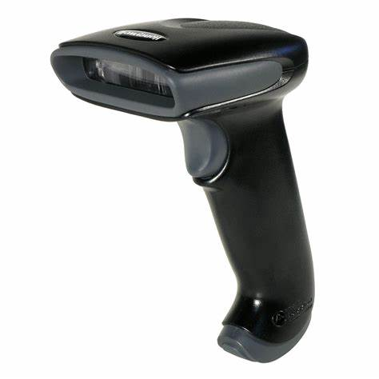

EL ORDENADOR
Periféricos:
- de entrada
- de salida
- Teclado: o KeyBoard, Es el dispositivo de entrada por excelencia, es el primer aparato con el que el usuario podrá interactuar con el ordenador para introducir órdenes o comandos. Se conecta a la placa base a través de un puerto USB, pero antes, tenían un conector específico.
- Ratón: o Mouse
 , Es un dispositivo tan normal que dificilmente se creería que no siempre existió, y menos que los primeros sólo tenían un botón. Se usa para posicionar un cursor en la pantalla para acceder a los distintos elementos que se muestran. Se conecta a la placa base a través de un puerto USB, pero antes, tenían un conector específico.
, Es un dispositivo tan normal que dificilmente se creería que no siempre existió, y menos que los primeros sólo tenían un botón. Se usa para posicionar un cursor en la pantalla para acceder a los distintos elementos que se muestran. Se conecta a la placa base a través de un puerto USB, pero antes, tenían un conector específico. - Escaner: o Scanner , son dispositivos que permiten copiar una imagen y enviarla al ordenador para su procesamiento y manipulación.
- Lectores de código: o Bar-Code Reader , son muy parecidos, de hecho cumplen la misma funcion del Escaner, pero en lugar de copiar, sólo "leen" e "interpretan" códigos de barra que estarán previamente grabados en la máquina (o en una base de datos).
- Cámara: o Web-Cam, bueno, creo que sabemos muy bien cómo se usa y para qué sirve una cámara, transmitis imágenes y/o video al ordenador.
- Micrófono: o Microphone, funciona igual que la cámara, con la diferencia de que en lugar de transmitir imágenes o video, transmitirá audio.
- Joystick: o Mando, se usan generalmente para jugar, transmiten al ordenador las órdenes que obedecerá el personaje a través de los botones.
- Monitor: Es justamente la pantalla, el periférico más notable de todos. Muestra al usuario las respuestas a sus requerimientos. Es curioso que las computadoras no siempre lo tuvieron, y sus respuestas eran dadas de otras formas.
- Proyector: Este aparato, funciona igual que el monitor, con la diferencia de emitir una luz potente capaz de materializar las imágenes en varias superficies como una pared.
- Impresora: en inglés Printer, es el dispositivo de salida por definición, es una de las formás más antiguas que tienen los ordenadores de mostrar a los usuarios los resultados de sus requerimientos, alimentadas con papel y tinta, son capaces de dejar plasmados estos resultados, las más modernas pueden imprimir fotografías con una calidad impresionante. Las primeras, sólo podían mostrar datos.
- Altavoces: también llamadas speakers o parlantes, también muestran al usuario los requerimientos a través de ondas sonoras.
Vendrían a ser las partes que van fuera de la Caja. Se pueden clasificar en dos tipos:
Dado que estos aparatos son los que tendrán interacción con el usuario (a diferencia de los componentes) conviene conocerlos de forma un poco más profunda que los otros, ya que aquellos se limitan a personas con conocimientos avanzados en electricidad, electónica y computación.
Dispositivos de entrada: Claro que cuando hablamos de entrada o salida, estamos hablando de datos, y en este caso, los dispositivos de entrada son aquelos que "aceptan" datos que serán introducidos por el usuario (es decir, usted).
Dispositivos de salida: son aquelos que "muestran" datos al usuario como respuesta a los requerimientos del usuario.
Practiquemos un poco:
El monitor es un dispositivo de entrada porque...
Seleccione la respuesta correcta: